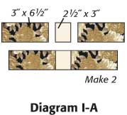

Garden Path Block Pattern

Skill Level
CONFIDENT BEGINNER
Finished Block Size
14″ x 14″
Cutting Instructions:
Cutting Instructions
(cut in order listed)
Step 1: Referring to Diagram I-A, sew together 2 print 3˝ x 6½˝ strips and 1 cream 2½˝ x 3˝ rectangle to make long pieced strip. Make 2. In similar manner, stitch together 2 print 3˝ x 4˝ and 1 cream 2½˝ x 3˝ rectangles to make short pieced strip (Diagram I-B). Make 2.


Step 2: Sew 2 cream 2˝ x 6½˝ strips to print 6½˝ square (Diagram II). Stitch 2 cream 2˝ x 9½˝ strips to top and bottom to make pieced square.
Step 3: Referring to Diagram III, sew short pieced strips to sides of pieced square. Stitch long pieced strips to top and bottom to make Garden Path Block.